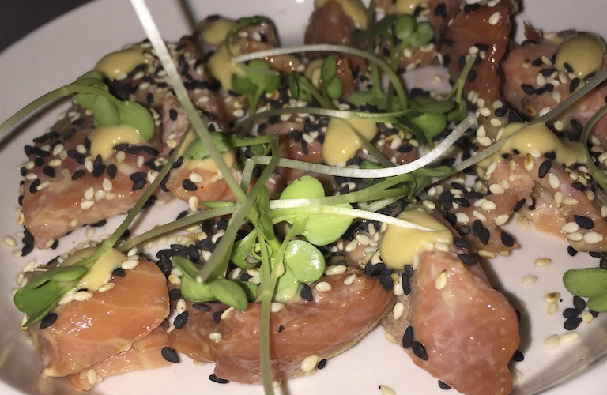
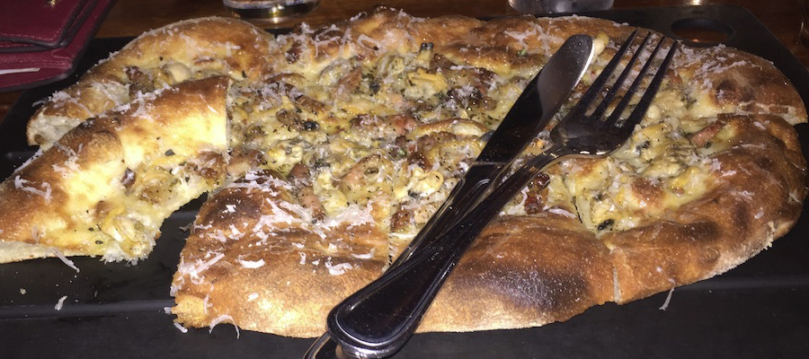
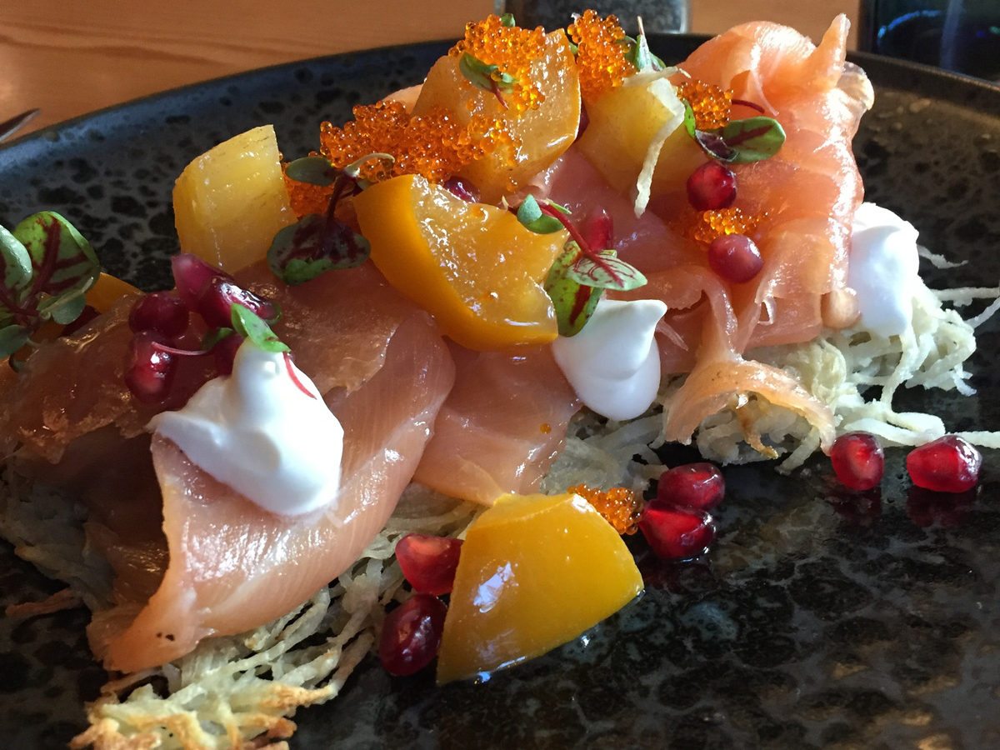
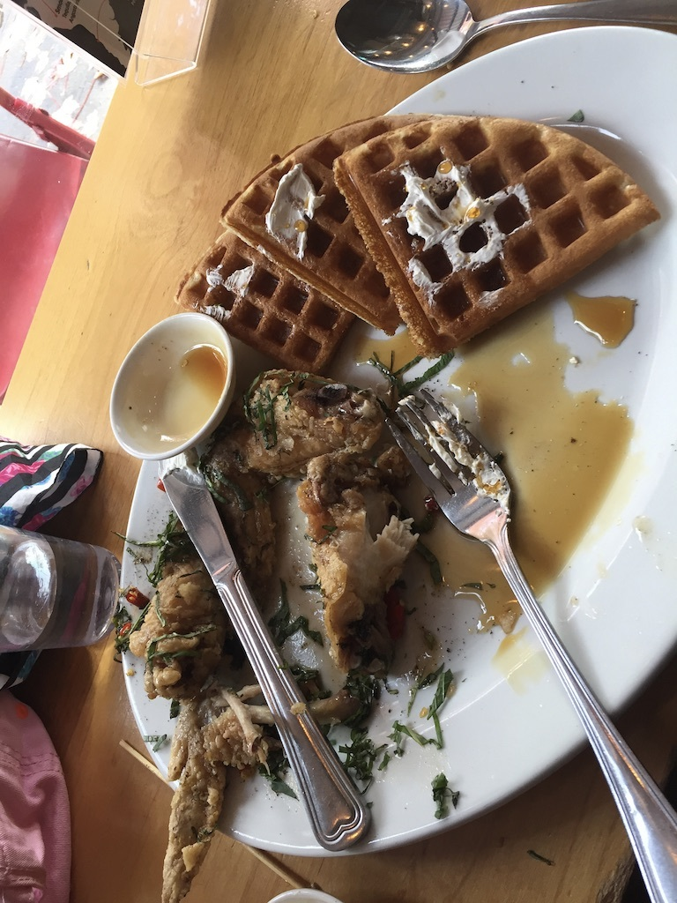
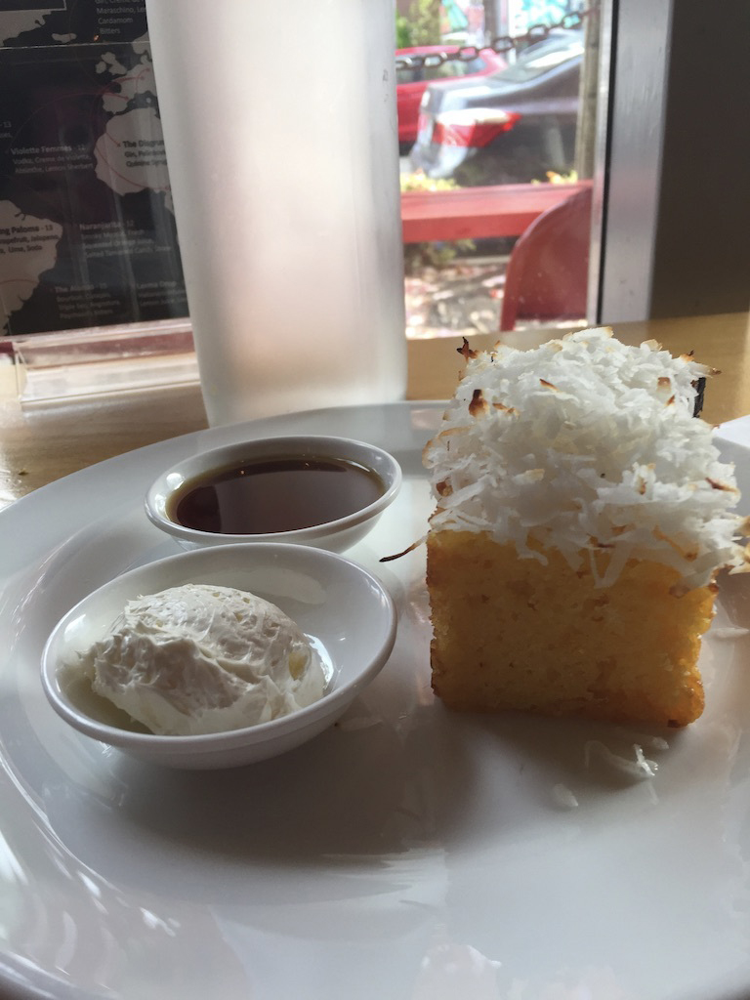

Seattle is known for many things. It’s home to the world’s largest substance addiction problem, coffee. I’m talking about the birthplace of Starbucks. It also serves as home to tech and business giants such as microsoft or Amazon, to name a few. It’s known for movies, television productions, rain (yes, the rain lives here!), and grunge rock music. The aerospace industry blew up here with Boing sitting comfortably in the forefront.
But growing up, I always had this image of Kurt Cobain, now deceased, in ripped jeans with a dirty flannel, and smoking a cigarette. This was my image for all of Seattle. Well, I’ve been there on a few different occasions and, if it ever really was like that, it’s not anymore! Or, maybe it’s just the evolutionary gentrification of Seattle... Whatever the case, I now leave you with some of my recent experiences there and can only hope that you find at least a teeny, tiny snippet of the provided information useful.
The Warwick has a small workout room which was a HUGE plus since I was in Seattle with a singular purpose. Eating. The hotel was located just a few blocks off of the Puget sound and literally right across the street from one of my favorite places to eat in Seattle, The Dahlia Lounge. I was sooo looking forward to having dinner here on my first night. This place is one of my favorite places to eat in Seattle because they’ve mastered the combination of creative, innovative food and drink as well as making their guests feel welcome. So of course this had to be my ‘welcome to Seattle’. What a treat!
The Dahlia Lounge is the flagship restaurant of Seattle chef Tom Douglas. The man pretty much is the restaurant scene in Seattle and soon you will understand what I mean. But, let me get back to the Dahlia Lounge. I’ve had exquisitely prepared meals there on previous trips to the ‘EmeraldCity’ but on this trip all I could handle was an appetizer and a glass of wine!
So I had a salmon salad with black sesame seeds and like a ponzu dressing . This place is a culinary must try, even if it’s just for drinks and/or appetizers. Yep, that’s what I said. They're definitely doing something right!
So, now for a brief introduction to the entrepreneur, the chef, the man that is Tom Douglas. Douglas has been awarded by James Beard Foundation three times! And, to top that off, in 2012, Douglas was named “Executive of the Year” by the Puget Sound Business Journal, with the numerous restaurants in the restaurant group bearing his name, employing close to, if not more than 1,000 people! Now that’s some big stuff if you ask me! With that said, let’s get back to the story.
Literally just around the corner from the Dahlia lounge was another of many restaurants in Seattle that reside under the Tom Douglas restaurant groups’ umbrella. The aptly named serious pie, serious pizza pie that is! I would definitely recommend this place to all of the good pizza lovers! However, don’t be discouraged if you get there and there’s a line formed out the door because it moves along, I promise!
The story on serious pie is this; I was returning to my hotel one night when I came across this place. I couldn’t help but to notice the line forming its way out the door and down the sidewalk. So of course I thought ‘That seems promising, I should probably check this out!’- so I put my name in for a spot and was informed that I would be waiting for 40, 45 minutes. I thought to myself ‘really? Is it that good? ‘let’s just see what all the hubbub is about!’. I have tell you; I was sooo happy I waited!
I waited for the predicted 45 minutes when they called my name. I was led inside to a packed table with one empty stool. That’s was when I realized what was going on, community dining!!! Now, I’m a very social person so this made me very happy. I politely excused myself as I squeezed in between rows of patrons, before nestling into my seat, joining the group of 5 people that were already seated and/or eating there. I briefly smiled and nodded before turning my attention to the menu.
I remember that almost all of their pies had an olive base, rather than the more typical marinara sauce. I ordered the regional, penn cove clam pizza and it was fucking fantastic! (Sorry, but there is no other descriptive word that could even begin to adequately describe the experience) From the lite chew of the crust, to the serious deliciousness of the local, fresh clams, this place was a hit in my book! As I sat there devouring my pizza, I struck up a convo with some of the other folks sitting there. I introduced myself to Sue and her mother who told me of a fun restaurant called Nue — more on that in a bit, a young lady named Trish, her boyfriend and another friend. Trish was quick to inform me that she was ‘hangry’ (hungry-angry for those not up on their slang game!) and that she may not be too conversational. Trish and her crew sat there for a good 15 minutes, indecisive as far as what to order. As I watched them struggle with the decision what to order, offered them the final 3 slices of my pie. Their faces lit up as they accepted my goodwill offer! After they’d finished the leftover pizza up they were able to focus on what they wanted to order. Yay for the power of food!!
They ended up ordering the yukon gold potato, rosemary and pecorino romano pizza as well as the sweet fennel sausage, roasted peppers and provolone pizza. And of course, in the spirit of community, or guilt from having eaten part of mine, they shared their pizza with me! All of the pizza was so very, very tasty and I was sooo thankful that they’d shared with me in return. We’d began the evening as a group of strangers but were chatting like old friends by the time their pizza came. That’s the power of food! Let me just say this, it’s called Serious Pie for a good reason, seriously.
The very next morning I’d decided to walk down to the Puget sound area to see what kind of a breakfast I could find there, remembering I’d saw a restaurant that seemed promising called ‘Scout p&w’. I had made a mental note, while looking at the menu posted in the window, that they served brunch. So I headed in that general direction and ended up there :-)
I walked in and immediately noticed the how the booths were all made of wood and cushioned with plaid seat covers, then it made sense. The p&w at the end of the name stood for plaid and wood! So I was seated in one of said booths and immediately understood what they feelings they were trying to invoke. Think, an old fashioned scout, the woods and the flannel shirts that the folks of this variety often wore. Having made my hypothesis regarding the name and decor of the restaurant, I turned my attention to the menu and saw my choice immediately.
House smoked, salmon gravlax on a bed of crispy potato rosti, chive crème fraÎche, pickled persimmon, pomegranates and a smattering of fish eggs! I thought ‘wow, that sounds amazing!’. And of course, I just had to have it so that’s what I ordered.
When the food actually arrived it was plated so beautifully, so artistically. I stared at the crispy, yet unfried, potato rosti topped with this delicate, pinkish pieces of smoked salmon. One couldn’t help but to admire the contrast of color on the plate as that was topped with the bright-orange hue of the pickled persimmon and the green flecked pillow of creme fraiche. And as if the patron could possibly be bored of color, it was lightly interspersed with the vibrant, bright red of the pomegranate seeds! It was beautiful. More so, it was the perfect harmony of flavors and textures. And, I took a picture of the smoked salmon gravlax @ Scout.
After I’d paid the bill, I lingered for a moment and drinking the last few sips of my cappuccino, and thought, ‘there really is some amazing food out there!’ I stood up, looked across the room to the open kitchen and saw the chef standing there. We locked eyes for a brief moment so I smiled at him, nodding my appreciation before gathering my things and walking out. Off to explore/investigate more food!
I continued onward, down the street to the waterfront and thought ‘I would really like another cup of coffee!. Fortunately for me, I remembered that the original starbucks was just down the street. Now, I’d walked by it in the past but always chose to stay away from the touristy location. ‘Who wants to stand in a long line and wait for coffee?’, I used to think. But this time I just HAD to join the throngs of tourist types and order a coffee at the first starbucks. Cross that off my list of things to do in Seattle. Let me just say this, when you feel the need for a cup of coffee, waiting in a long, slow line is not the best idea. But still, I chose to suffer!
After 45 minutes of waiting and feeling as though I was on the verge of death (not really), I realized that I had moved up and was almost near the front of the line! I simply clenched my jaw and mentally vowed to stand in that insanely slow line for whatever time it took. I was determined.
Thankfully, I only waited only 15 more minutes. Had it lasted any longer I may have started to froth at the mouth, with my eyes rolling back in my head and yelling inexcusable profanities. As it was, images of freshly poured coffee had begun floating around in my head, teasing me, mercilessly taunting me. That’s when I heard the high-pitched, raised voice struggling to be heard over the the crowd, “how can I help you, ma’am?”, pulling me out of the coffee starved nightmare in my head and back to reality.
Luckily, I’d overheard a previous patron saying that they only served coffee here, not man-made concoctions such as lattes or frappuccinos, so I ordered the dark roast and bought a pound of whole-bean crack! Ooops, did i say crack? Because I’m sure I meant to say coffee. My bad! Seriously though, the coffee here is strong enough to burn a hole through your stomach, so be prepared!!! I had sooo much energy after the starbucks coffee that I must’ve walked around the Puget sound area for quite a while afterwards.
Now, I’d remembered this restaurant that Sue had spoke emphatically of during our brief conversation at serious pie, a place called ‘Nue’. She swore by it and said it was ‘sooo good!’. So, on my last day there I thought I’d better try it or forever live with the wonder of what could have been…
I had the Chengdu spiced, chicken and waffles with a side of the pineapple cornbread, topped with toasted coconut shavings. The cornbread was a HUGE bonus. The flavor of the cornbread itself was invigorated by the pineapple that was layered throughout as well as the sugary crust that developed on the outside (from the pineapple?). The cornbread alone is worth a trip to the Emerald City.
And the chicken. I was expecting something with a bit more spice since Chengdu paste is made with crushed szechuan peppers and also, Chengdu is the capital city of the Sichuan Province. Instead, what I got was a well spiced, savory fried chicken thigh with just the right amount of tang, red in hue and wasn’t spicy at all. That was paired with the most perfectly cooked buttermilk waffle. I mean, the waffle tasted just like what you’d expect but the texture was fantastic! As I sank my teeth through the light crunch of the exterior and into the moist and fluffy center, I thought, ‘this is absolutely perfect!’. This was my final food experience in Seattle and it was definitely a great way to cap off an unbelievably delicious journey.
With that said, I say until next time!